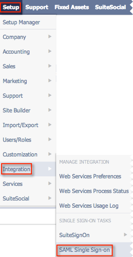

On the main menu at the top of the page select Setup > Integration > SAML Single Sign-on, as shown below.

Copy and paste the following URL into Logout Landing Page, as shown above.
Copy and paste the following URL into Identity Provider Login Page, as shown above.
Sign into the Okta Admin dashboard to generate this value.Save the metadata shown below in a file named metadata.txt. Select Upload IDP metadata File. Then, select Choose File and navigate to the metadata.txt file you just created, as shown above.
Sign into the Okta Admin dashboard to generate this value.